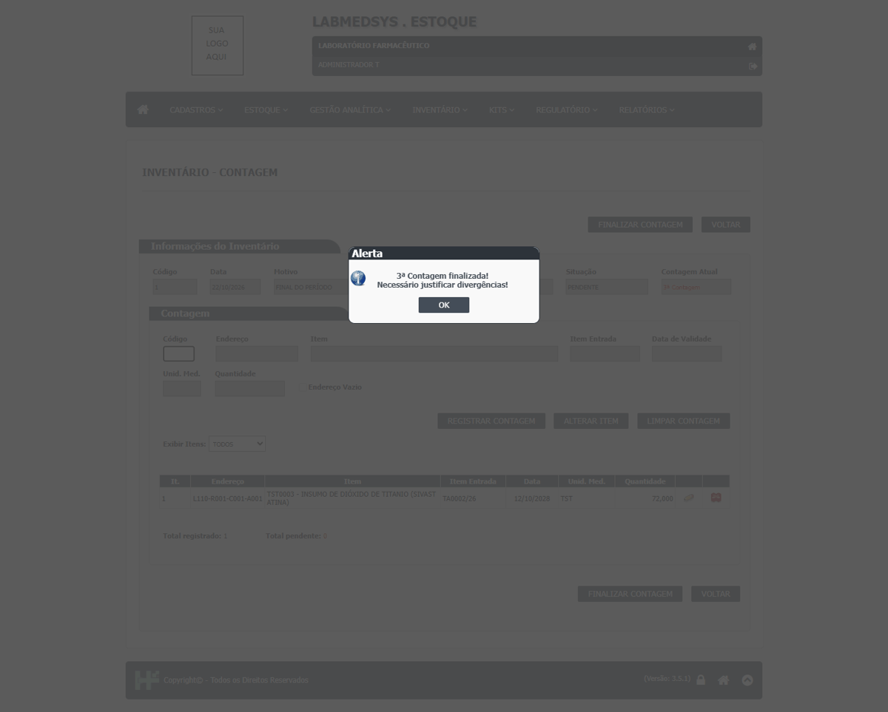
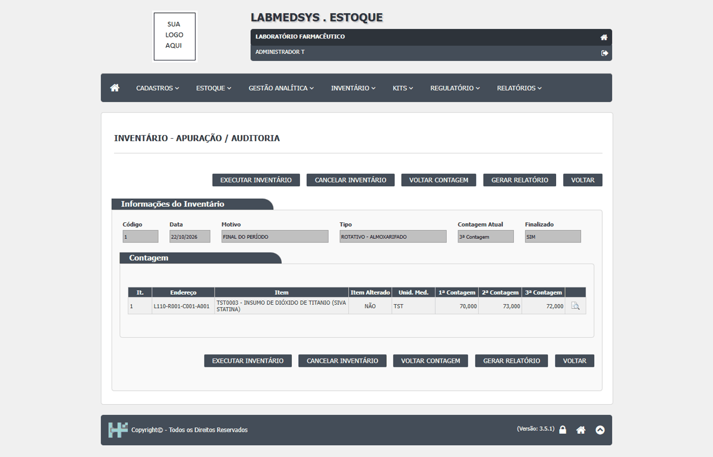
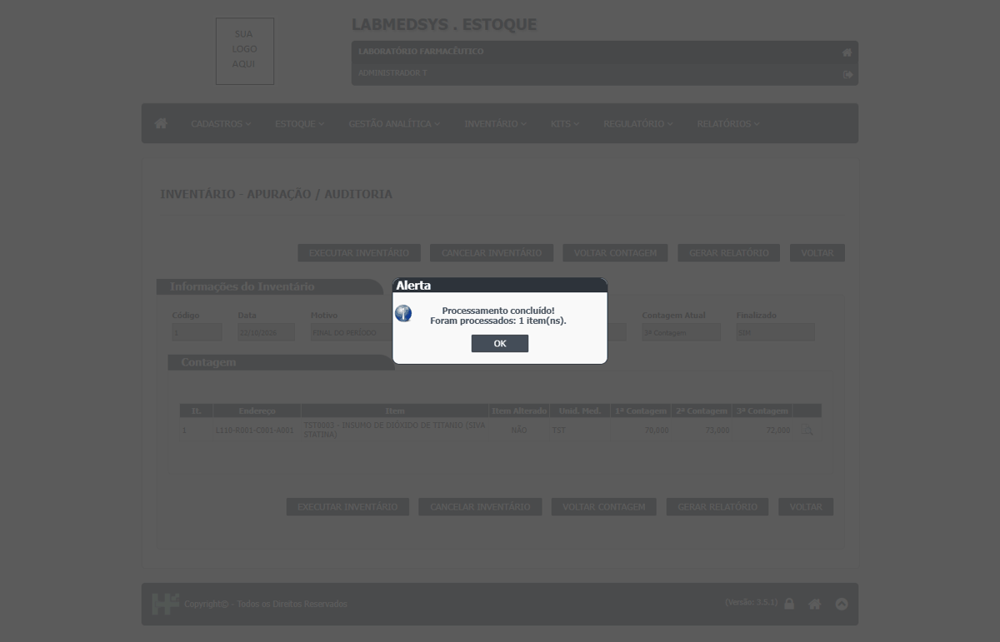
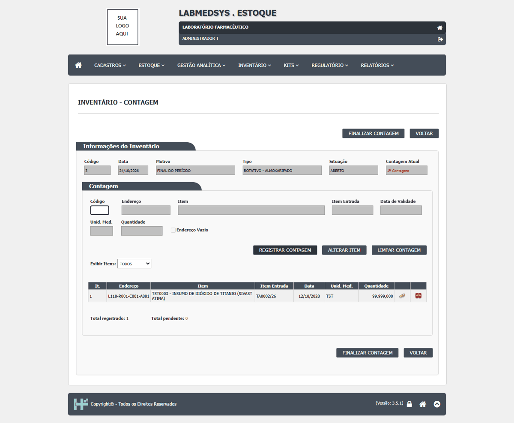

DV-EST-049 · No inventário, a mesma pessoa conta três vezes, justifica e apura, sem nenhuma restrição
O mesmo usuário fez a 1ª, a 2ª e a 3ª contagem, justificou a divergência e executou a apuração do inventário, e o saldo foi ajustado (75 para 72). O sistema não pede um segundo contador nem avisa que quem conta também apura.
Como reproduzir o erro, passo a passo
- Gerar um inventário rotativo de almoxarifado (Inventário, almoxarifado TESTE ALMOXARIFADO).
- Em Inventário - Contagem, registrar a 1ª contagem (70) e finalizar; repetir a 2ª (73) e a 3ª (72), com o mesmo usuário.
- Em Inventário - Auditoria/Justificativa, justificar o item com o mesmo usuário e finalizar.
- Em Inventário - Apuração, executar o inventário com o mesmo usuário.
Esperado
Contagens por pessoas diferentes e apuração por um responsável diferente de quem contou (ou, no mínimo, um aviso e o registro de que foi a mesma pessoa).
Obtido
Nenhum aviso. Mensagens: "1ª Contagem finalizada! Necessário efetuar nova contagem!", "3ª Contagem finalizada! Necessário justificar divergências!", "Justificativa finalizada!", "Processamento concluído! Foram processados: 1 item(ns)."
Evidência (captura da tela)



DV-EST-138 · Contagem do inventário aceita 99.999 e 0 sem pedir confirmação
Para um endereço com saldo de cerca de 72, a contagem aceitou `99999` (gravou 99.999,000) e `0` sem alerta. Só vazio, letras e mais de uma vírgula são recusados.
Como reproduzir o erro, passo a passo
- Abrir a contagem, digitar 99999 e REGISTRAR CONTAGEM.
Esperado
Pedir confirmação para valor muito acima ou abaixo do saldo.
Obtido
Aceito sem aviso.
Evidência (captura da tela)
